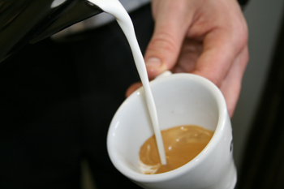
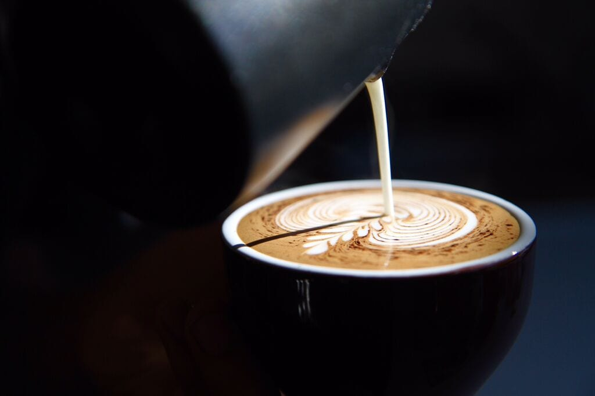
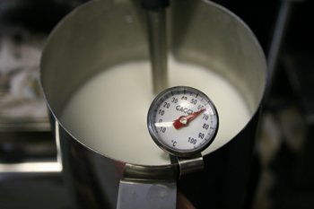
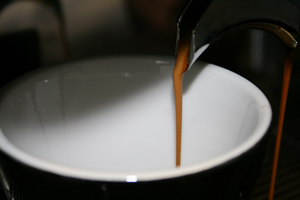

First Things To Know
The Milk

You need cold and fresh milk. Most people prefer full fat milk for Latte Art but it is really up to you,
if you use a right technique then it doesn’t make too much difference. Just make sure that the milk is fresh and straight out of the fridge. Do not expose it to heat or light before you steam it.
Never use the same milk again when you are working on Latte Art.
The Jug

Use a stainless steel jug with a narrow spout. Make sure that the jug is cold and clean before use.
Fill up the jug with enough milk for your cup and make sure that you have enough milk so you have time to texture the milk.
Too less milk will cause the milk to heat up too quick so a little bit more milk is better. Do not worry about the wastage too much.
Thermometer

Use a thermometer that has a clip to attach to the jug. The thermometer should have a good size so you can easily read it.
Make sure that the thermometer is adjusted right, you can do this by putting it in ice water and correcting the dial.
Usually you can adjust the dial with a screw in the back. The best way to adjust your thermometer is to compare it with a digital probe.
Do not place the thermometer in the dishwasher, the moisture will break your thermometer. It is also possible to judge the temperature of the milk by touch.
Espresso

The espresso is just as important as the milk. Make sure that the espresso is fresh and has a good thick and strong layer
of crema. It becomes very difficult to create good Latte Art without good crema on your espresso.